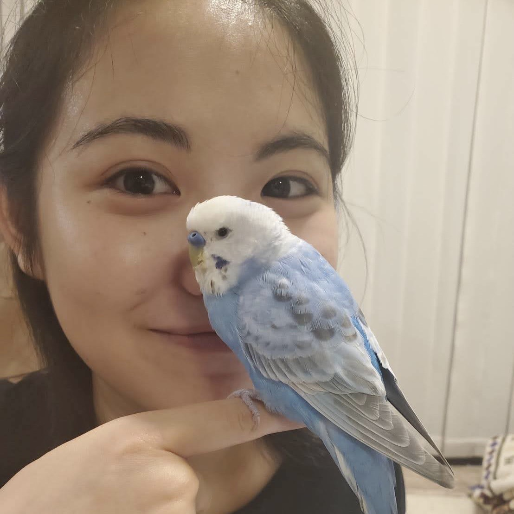

基本データ

1.平手美羽
- 誕生日 12月15日
- 星座 射手座
- 出身地 東京
- 学校 慶應義塾大学
- 学部 法学部政治学科
マイペースな子
唐揚げが大好き！
| 2003 | 東京都 生誕 |
|---|---|
| 2008-2010 | 静岡 |
| 2010-2013 | 大阪 |
| 2016-2022 | 頌栄女子学院中学校・高等学校 軽音部 |
| 2022 | 慶應 入学 |
プログラミング技術を磨くだけでなく、人格の向上を目指せるところ！！
同期だけでなく、先輩方とも関わることことができるため、良い刺激をもらえるところが良い